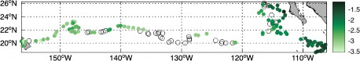
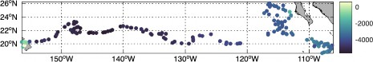
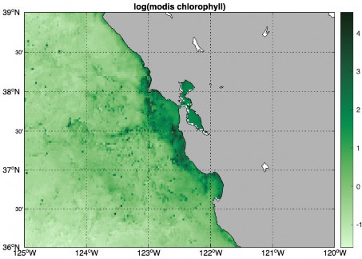
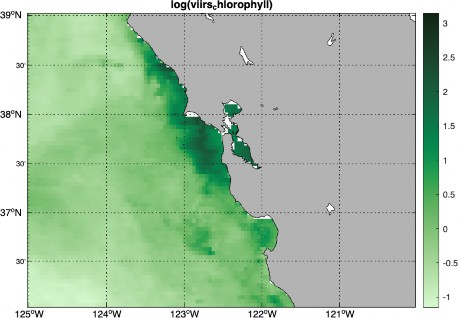
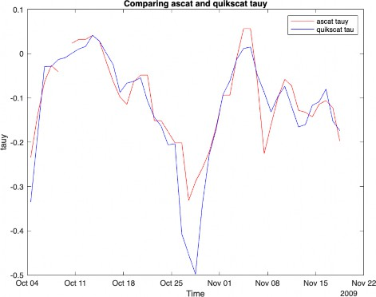
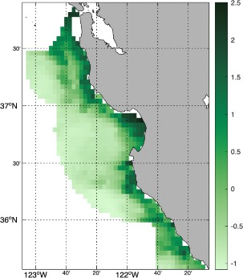
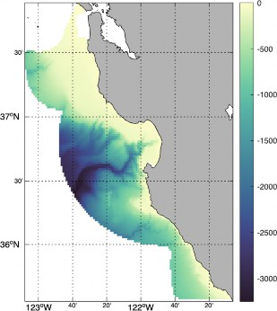

Introduction
'xtractoMatlab' is a Matlab package that simplfies obtaining data from ERDDAP™ servers. This new version operates much like the R package 'rerddapXtracto'. There are two steps in getting data - the first step is to get information about the dataset, the second step is to use that information in order to make an extract frm an ERDDAP™ dataset.
xtractoMatlab' has 6 main functions. The first function, 'erddapInfo()', is used to find the information about an ERDDAP™dataset:
function [ info ] = erddapInfo( datasetID, varargin )
There are three functions to extract data:
function [extractStruct] = xtracto(dataInfo, parameter, xpos, ypos, varargin)
function [extract] = xtracto_3D(dataInfo, parameter, xpos, ypos, varargin )
function [extract, xlon, xlat, xtime] = xtractogon(dataInfo, parameter, xpoly, ypoly, varargin);
There are two mapping functions:
function [] = makeMap_grid(extract, time_period, varargin)
function [] = makeMap_track(extract, varargin)
Dates and time are handled with help from the package 'datenum8601' by Stephen Cobeldick (https://www.mathworks.com/matlabcentral/fileexchange/39389-iso-8601-date-string-to-serial-date-number). The mappng functons in 'xtractoMatlab' make use of the Matlab package 'm_map' (https:// www.eoas.ubc.ca/~rich/map.html) by Rich Pawlowicz - not included, as well as the package 'cmocean'
by Chad A. Greene ((https://www.mathworks.com/matlabcentral/fileexchange/57773-cmocean-perceptually- uniform-colormaps), which implementss the perptually uniform colormaps developed by Kristen Thyng (https:// matplotlib.org/cmocean/).
'erddapInfo()' extracts necessary information about an ERDDAP™ dataset that is used by the three data extraction functions. 'datasetD' is a string containing a valid ERDDAP™ datasetID, say 'erdSWchla8day', The function description is:
function [ info ] = erddapInfo( datasetID, varargin )
INPUT: datasetID - datasetID of ERDDAP™ dataset to be accessed varagin - Base URL of ERDDAP™ to use
Default URL - 'https://coastwatch.pfeg.noaa.gov/erddap/'
OUTPUT: Structure containing fields
access: contains base URL and datasetD dimensionNames: Names of dataset dmensions dimensionMin: Minimum valid value for dimension dimensionMax: Maximum valid value for dimension variables: parameters in the dataset
cdm_type: Common Data Model type, used for checking in othe functions class: 'erddapInfo' - used to check input to other functions is correct Example:
swchlInfo = erddapInfo('erdSWchla8day')
swchlInfo = struct with fields:
access: dimensionNames: | [1×1 struct] [4×1 string] | |||
dimensionMin: | ["1997-09-02T00:00:00Z" | "0" | "-90" | "0"] |
dimensionMax: | ["2010-12-07T00:00:00Z" | "0" | "90" | "360"] |
variables: | "chlorophyll" | |||
cdm_type: | "Grid" | |||
class: | 'erddapInfo' | |||
"xtracto()' is a function to extract gridded data from an ERDDAP™ server along a track in several dimensions. The function description is:
function [extractStruct] = xtracto(dataInfo, parameter, xpos, ypos, varargin) INPUTS:
datasetInfo - result from callng 'erddapInfo()' parameter - name of parameter to extract
xpos - x-axis (usually longitude) postions along track ypos - y-axis (usually latitude) postions along track OPTIONAL INPUTS:
optional inputs given by passing the name of the input in quotes followd by the values. Order does not matter. 'tpos' - times along the track
'zpos' - other dimension along track, usually 'altitude' or 'depth' 'xName' - name of x-coordinate, default 'longitude'
'yName' - name of y-coordinate, default 'latitude' 'zName' - name of z-coordinate, default 'altitude' 'tName' - name of time cordinat, default 'time'
'xlen'- size of box around x-coordinate to make extract, default 0. 'ylen'- size of box around y-coordinate to make extract, default 0. 'zlen'- size of box around z-coordinate to make extract, default 0.
'urlbase' - base URL of ERDDAP server, default 'https://coastwatch.pfeg.noaa.gov/erddap/' OUTPUT:
structure where each field is of the same length as the track (see text)
In 'xtracto()', 'xpos' and 'ypos' are vectors of the x-dimension and y-dimension positions along the track. By default the x-dimension is named "longitude" and the y-dimension is named "latitude". For datasets not on longitude-latitude grids, such as projected data, the names of these dimensions must be passed to the function by including terms such as ('xName', 'row', 'yName', 'col').
If the dataset has 'time' as a dimension, then the times along the track can be added by including a cell-array of the values along the track in ISO format, say 'tpos' , by adding ('tpos', tpos) to the function call.
If the dataset has another dimension, say 'altitude' or 'depth', then an array of those values along the track, say 'zpos', must be added to the function call as ('zpos', zpos). The default name for the this dimension is 'altitude'. If that is not the name of the dimension, then the actual name must be passed as ('zName', zName).
Finally, due to error in positoning along a track, or due to noise in the satellite data, among other reasons, it can be desirable not to make an extract at the point but rather extract data in a box around the point in the track and then calcuate statistics on that extract. This can be done by adding values for 'xlen', 'ylen' and 'zlen' where the box will have a width of half of the value.
Assuming that 'datasetInfo' has been obtained from calling 'erddapInfo()', and 'parameter', 'xpos', 'ypos', 'tpos', 'xlen' and 'ylen' have all been defined, a call to 'xtracto()' would look like:
extract = xtracto(datasetInfo, parameter, xpos, ypos, 'tpos', tpos, 'xlen', xlen, 'ylen', ylen);
The output of 'xtracto()' is a structure of the form:
mean_parameter - mean of the parameter within the bounds of that time period
std_parameter - standard deviation of the parameter within the bounds of that time period
n - number of observations in the extract at each time period
satellite_date - time of the actual request to the dataset at ech time period
requested_xName_min - minimun x-axis value in request at each time period
requested_xName_max - maximum x-axis value in request at each time period
requested_yName_min - minimun y-axis value in request at each time period
requested_yName_max - maximum y-axis value in request at each time period
requested_zName_min - minimun z-axis value in request at each time period
requested_zName_max - maximum z-axis value in request at each time period
requested_date - date given in track
median - median of the parameter within the bounds of that time period
mad - Mean absolute deviation of the parameter within the bounds of that time period
where each field is the same length as the track.
Marlin tag data and chla
The file "Marlin38606.mat' contains tracks of a marlin courtesy of Dr. Mike Musyl of the Pelagic Research Group LLC. First step is to load the included dataset:
load('Marlin38606.mat');
To extract seaWIFS 8-day chlorophyll along the track, the datasetID for that dataset, 'erdSWchla8day' , can be found by searching at https://coastwatch.pfeg.noaa.gov/erddap/index.html, so the next step is get information about the dataset:
swchlInfo = erddapInfo('erdSWchla8day');
Then the Marlin data is set up to be used in 'xtracto()':
xpos = Marlin38606.lon'; ypos = Marlin38606.lat'; tpos = Marlin38606.date; tpos = datenum(tpos);
tpos = cellstr(datestr(tpos,'yyyy-mm-dd' )); zpos = zeros(1, numel(xpos));
Then the extract is made:
swchlExtract = xtracto(swchlInfo, 'chlorophyll', xpos, ypos, 'tpos', tpos, 'zpos', zpos, 'xlen', .2, 'ylen', .2);
warning - zlen has a single value
xlen and ylen have length greater than 1
zlen will be extended to be same length with value 0
The result can be mapped using "makeMap_track()" (see below for more informtion on this function):
myfun = @(x)log(x);
makeMap_track(swchlExtract, 'c_map', 'algae', 'MyFunc', myfun)

Bathmetry along the track can also be extracted and plotted:
etopo_info = erddapInfo('etopo360');
etopo = xtracto(etopo_info, 'altitude', xpos, ypos, 'tpos', tpos, 'xlen',
.2, 'ylen', .2 );
makeMap_track(etopo, 'c_map', '-deep');

'xtracto_3D()' is a function to extract gridded data from an ERDDAP™ server in a given bounding box. The function descrption is:
function [extract] = xtracto_3D(dataInfo, parameter, xpos, ypos, varargin ) INPUTS:
datasetInfo - result from callng 'erddapInfo()' parameter - name of parameter to extract
xpos - array of size 2 of x-axis (usually longitude) bounds ypos - array of size 2 of y-axis (usually latitude) bounds
OPTIONAL INPUTS:
optional inputs give by passing the name of the input in quotes followd by the values. Order does not matter.
'tpos' - array of size 2 of time bounds
'zpos' - array of size 2 of other dimension bound, usually 'altitude' or 'depth'
'xName' - name of x-coordinate, default 'longitude' 'yName' - name of y-coordinate, default 'latitude' 'zName' - name of z-coordinate, default 'altitude' 'tName' - name of time cordinat, default 'time'
'urlbase' - base URL of ERDDAP™ server, default 'https://coastwatch.pfeg.noaa.gov/erddap/'
OUTPUT:
structure containing:
tpos values - 1D array zpos values - 1D array ypos values - 1D array xpos values - 1D array
parameter values - matrix with same numbr of dimension as the dataset
'datasetInfo' is a result from calling 'erddapInfo()' for the given dataset, "xpos" and "ypos" are vectors of length 2 giving the x-axis and y-axis extents of the bounding box. By default it is assume that the names of the x- and y- axes are 'longitude' and 'latitude'. If not, say for projected data, the actual names must be passed by addng to the function call ('xName', xName, 'yName', yName).
If the dataset has a third dimension, say 'altitude', then the extents for that dimenson can be pass by a vector of length 2, say 'zpos', by appending ('zpos', zpos) to the function call. The default for the 'z-axis' is 'altitude', if this is not the name in the dataset, the actual name can be appending to the function call ('zName', zname).
Finally if 'time' is a dimension, than you must pass a cell-array of length 2 with the time extents in ISO format, say 'tpos' as ('tpos', tpos).
So for properly defined arrays 'xpos', 'ypos', 'zpos', 'tpos' and with 'datasetInfo' from a call to 'erddapInfo()', a call to 'xtracto_3D()' would be:
extract = xtracto_3D(datasetInfo', xpos, ypos, 'zpos', zpos, 'tpos', tpos);
'extract' is then a structure with all of the coordinate values as well as the extracted data. For example in the MODIS chlorophyll example below, the returned structure is:
time: [2×1 string]
altitude: 0
latitude: [121×1 double]
longitude: [201×1 double]
chlorophyll: [2×1×121×201 double]
clear;
clear;
xpos = [235 240];
ypos = [36 39];
zpos = [0 0];
tpos{1} = '2018-01-16';
tpos{2} = '2018-03-16';
modis_info = erddapInfo('erdMBchlamday');
MODIS = xtracto_3D(modis_info, 'chlorophyll', xpos, ypos, 'tpos', tpos, 'zpos', zpos);
myfun = @(x)log(x);
makeMap_grid(MODIS, MODIS.time(1, :), 'myFunc', myfun, 'c_map', 'algae'); title('log(modis chlorophyll)');


xpos = [235 240];
ypos = [36 39];
tpos{1} = '2012-01-15';
tpos{2} = '2012-01-15';
viirs_info = erddapInfo('erdVH3chlamday');
VIIRS = xtracto_3D(viirs_info, 'chla', xpos, ypos, 'tpos', tpos); myfun = @(x)log(x);
makeMap_grid(VIIRS, VIIRS.time(1, :), 'myFunc', myfun, 'c_map', 'algae'); title('log(viirs_chlorophyll)');
clear;
xpos = [237 237];
ypos = [36 36];
zpos = [0 0];
tpos{1} = '2009-10-05';
tpos{2} = '2009-11-19';
ascat_info = erddapInfo('erdQAstress3day');
ascat = xtracto_3D(ascat_info, 'tauy', xpos, ypos, 'tpos', tpos, 'zpos', zpos);
quikscat_info = erddapInfo('erdQSstress3day');
quikscat = xtracto_3D(quikscat_info, 'tauy', xpos, ypos, 'tpos', tpos, 'zpos', zpos);
% convert times to matlab datetime

clear;
xpos = [ -889533.8 -469356.9];
ypos = [622858.3 270983.4]; tpos{1} = '2023-01-30T00:00:00Z'; tpos{2} = '2023-01-30T00:00:00Z';
All of the main functions work with projected data if the appropriate parameters are passed to the functions. Here is an example that extracts sea ice thickness data around the arctic which is in a polar stereographic projection.
times = datetime(ascat.time, 'InputFormat', 'yyyy-MM-dd''T''HH:mm:ss''Z');
% Open a new figure window figure;
% Plot the first dataset in red
plot(times, double(ascat.tauy), 'r', 'DisplayName', 'ascat tauy'); hold on; % Hold on to add the second plot
% Plot the second dataset in blue
plot(times, double(quikscat.tauy), 'b', 'DisplayName', 'quikscat tau');
% Adding labels and title xlabel('Time');
ylabel('tauy');
title('Comparing ascat and quikscat tauy');
% Adding a legend legend show;
% Release the hold hold off;
not lat-lon
extract
extract = struct with fields:
time: "2023-01-30T12:26:01Z"
altitude: 0
rows: [529×1 double]
cols: [444×1 double]
IceThickness: [1×1×529×444 double]
'xtractogon()' is a function that extracts gridded data from an ERDDAP™ server where the data are constrained to be within a polygon defined by 'xpos' and 'ypos'. The function is limited to datasets on an latitdute-longitude grid though there can be multiple time periods. The function description is:
function [extract, xlon, xlat, xtime] = xtractogon(datasetInfo, parameter, xpoly, ypoly, varargin); INPUTS:
datasetInfo - result from callng 'erddapInfo()' parameter - name of parameter to extract
xpoly - array of x-axis (usually longitude) polygon values ypoly - array of y-axis (usually latitude) polygon values
OPTIONAL INPUTS:
optional inputs give by passing the name of the input in quotes followd by the values. Order does not matter.
'tpos' - array of size 2 of time bounds
'zpos' - array of size 2 of other dimension bound, usually 'altitude' or ' each element must be the same
'xName' - name of x-coordinate, default 'longitude'
myURL = 'https://polarwatch.noaa.gov/erddap/';
myInfo = erddapInfo('noaacwVIIRSn20icethickNP06Daily', myURL);
extract = xtracto_3D(myInfo, 'IceThickness', xpos, ypos, 'tpos', tpos, ... 'xName', 'rows', 'yName', 'cols');
'yName' - name of y-coordinate, default 'latitude' 'zName' - name of z-coordinate, default 'altitude' 'tName' - name of time cordinat, default 'time'
'urlbase' - base URL of ERDDAP™ server, default 'https://coastwatch.pfeg.no
OUTPUT:
structure containing:
tpos values - 1D array zpos values - 1D array ypos values - 1D array xpos values - 1D array
parameter values - matrix with same numbr of dimension as the dataset
If there is a z-coordinate, it can only have one value. Otherwise the arguments are the same as in 'xtracto_3D()'.
The file 'mbnms.mat' contains the boundaries of Monterey Bay National Marine Sanctuary, and we can use that to extract data only contained in the Sanctuary boundaries, for example chlorophyll (through time):
clear; load('mbnms.mat');
tpos{1} = '2014-09-01';
tpos{2} = '2014-11-17';
xpoly = mbnms(:, 1); ypoly = mbnms(:, 2);
sanctchl_info = erddapInfo('erdMH1chlamday');
sanctchl = xtractogon(sanctchl_info, 'chlorophyll', xpoly, ypoly, 'tpos', tpos);
The result for one time-period can be graphed using 'makeMap_grid()':
myfun = @(x)log(x);
makeMap_grid(sanctchl, sanctchl.time(1, :), 'myFunc', myfun, 'c_map', 'algae');

Similarly the bathymetry can be accessed and mapped, which show the famous Monterey Bay canyon:
etopo_info = erddapInfo('etopo180');
etopo = xtractogon(etopo_info, 'altitude', xpoly, ypoly, 'tpos', tpos); makeMap_grid(etopo, NaN, 'c_map', '-deep');

There are two mapping routines both of which require the 'm_map' package (https://www.eoas.ubc.ca/~rich/ map.html). The function definitons are:
function makeMap_track(track_extract, varargin) INPUTS:
track_extract - result from 'xtracto()' varargin - optional arguments
'projection' - map projection, default 'mercator' 'myFunc' - function to transform the data, default none 'c_map' - colormap to use in map, default 'parula'
OUTPUT:
map of track
function [] = makeMap_grid(extract, time_period, varargin) INPUTS:
extract - result from either 'xtracto_3D()' or 'xtratogon()' time_period - which time perio to map
varargin - optional arguments
'projection' - map projection, default 'mercator' 'myFunc' - function to transform the data, default none 'c_map' - colormap to use in map, default 'parula'
OUTPUT:
map of data
Examples or their use are given above.. 'makeMap_grid()' is for output from 'xtracto_3D()' and 'xtractogon()' while 'makeMap_track()' is for output from 'xtracto()'. In makeMap_grid()' the argument 'time_period' defines the time period from the extract to be mapped. The optional arguments in 'varagin' and their default values are:
'projection' - 'mercator'
'c_map' - 'parula'
'myFunc' - @(x) x
where 'projection' can be any projection support by the 'm_map' package,; 'c_map' is the colormap which defaults to the Matlab default 'parula' otherwise is one of the colorbars defined in the 'cmocean' package (https://www.mathworks.com/matlabcentral/fileexchange/57773-cmocean-perceptually-uniform-colormaps), say 'algae' or 'deep' or 'balance'; and 'myFunc' is a lambda function used to transform the data before plotting. In 'makeMap_grid()' , 'time_period' is the time period to be plotted, which must be one of the returned times, say 'extract.time(1, :)' to plot the first time. If the dataset is only two-dimensional, say a bathymetry extract, pass 'NaN' for the time (see example below).